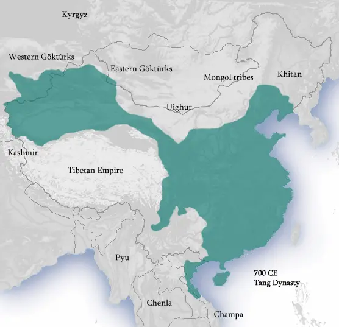
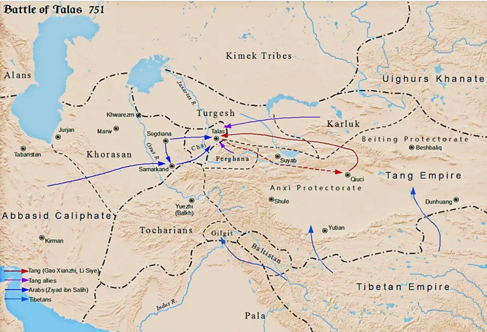
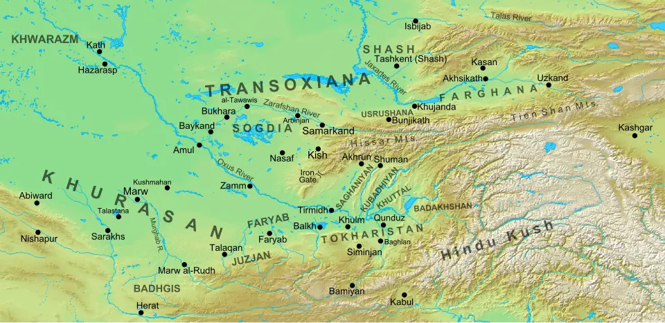
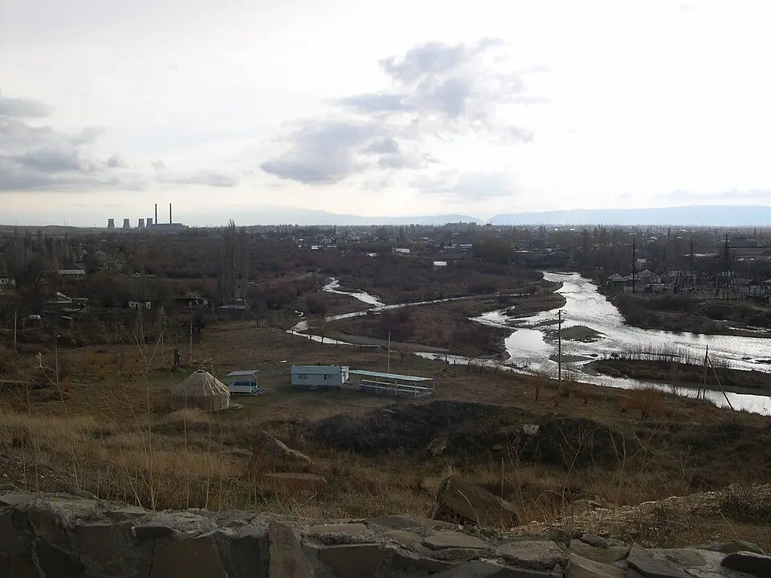

Trận Talas: khi nhà Đường gặp nhà Abbasid
Tháng 7 năm 751, quân Đường và quân Abbasid gặp nhau bên sông Talas. Truyền thuyết kể rằng tù binh Trung Hoa đã mang nghề làm giấy sang thế giới Hồi giáo, nhưng bằng chứng không ủng hộ.

Năm 762, một con thuyền cập cảng Quảng Châu. Trên thuyền có Đỗ Hoàn, một người Trường An đã rời quê hơn mười năm. Ông bị bắt làm tù binh trong trận Talas năm 751, rồi đi qua những vùng đất mà người Trung Hoa gọi là “Đại Thực”, tức đế quốc Abbasid. Khi về, ông viết lại những gì đã thấy. Cuốn sách gần như mất hết, nhưng vài đoạn còn sót lại đã trở thành một bằng chứng quan trọng trong một cuộc tranh luận kéo dài hàng thế kỷ: ai đã mang nghề làm giấy sang phương Tây?
Hai đế quốc ở Trung Á
Giữa thế kỷ 8, nhà Đường kiểm soát các ốc đảo trên Con đường Tơ lụa ở lòng chảo Tarim. Phía tây, các đạo quân Ả Rập đã chiếm Bukhara và Samarkand từ đầu thế kỷ. Năm 750, nhà Abbasid lật đổ nhà Umayyad.
Tướng nhà Đường ở mặt trận này là Cao Tiên Chi, con trai một tướng Cao Câu Ly bị nhà Đường bắt rồi quy phục. Năm 747, ông dẫn 10.000 kỵ binh vượt dãy Pamir, đánh úp Tiểu Bột Luật, một thành bang quanh vùng Gilgit, Pakistan ngày nay.
Mồi lửa là chuyện nước Thạch (Tashkent). Quân của Cao Tiên Chi bắt vua Thạch đã đầu hàng, vẫn cướp thành, rồi đưa vua về Trường An xử tử. Con trai vua Thạch cầu cứu người Ả Rập. Tháng 5 năm 751, viện binh của Abu Muslim đến Samarkand.
Năm ngày bên sông Talas


Vị trí chính xác của trận đánh chưa được xác định, chỉ biết là gần Taraz, trên biên giới Kazakhstan và Kyrgyzstan ngày nay. Theo các nguồn Trung Hoa, quân Đường có khoảng 30.000 người, gồm 10.000 bộ binh Đường và 20.000 lính đánh thuê người Cát La Lộc (Karluk). Nguồn Ả Rập lại nói quân Đường có 100.000 người.
Theo sử Trung Hoa, hai bên giằng co năm ngày. Đến ngày thứ năm, quân Cát La Lộc, chiếm hai phần ba quân Đường, quay sang đánh từ phía sau. Cao Tiên Chi muốn đánh tiếp, nhưng phó tướng Lý Tự Nghiệp can ngăn. Lý Tự Nghiệp dẫn kỵ binh mở đường máu, giúp Cao Tiên Chi thoát. Theo ước tính, chưa đến 2.000 quân Đường về được.
Sử sách hai bên chép khác nhau


Thông điển, soạn năm 801, ghi 30.000 người chết. Cựu Đường thư ghi 20.000. Các tác giả Ả Rập như al-Maqdisi và Ibn al-Athir ghi 45.000 đến 50.000 người chết và 20.000 đến 25.000 tù binh. Họ còn chép rằng Cao Tiên Chi tử trận. Thực tế ông sống thêm năm năm, và bị xử tử đầu năm 756 sau khi bị một hoạn quan vu cáo tham nhũng trong lúc chống An Lộc Sơn.
Chuyện quân Cát La Lộc “trở giáo” cũng không chắc. Sử gia al-Dhahabi ở thế kỷ 13 viết rằng họ vốn là đồng minh của Abbasid ngay từ đầu.
Ý nghĩa của trận đánh cũng bị tranh cãi. Sử gia Nga Vasily Bartold coi đây là trận quyết định văn minh Hồi giáo hay Trung Hoa sẽ thắng thế ở Trung Á. Người khác cho rằng biên giới gần như không đổi, và chỉ một năm sau, sứ thần Abbasid đã đến triều Đường. Điều thực sự đẩy nhà Đường khỏi Trung Á là loạn An Lộc Sơn năm 755.
Chuyện tù binh làm giấy


Câu chuyện nổi tiếng nhất về Talas đến từ al-Tha'alibi, một tác giả thế kỷ 11, tức khoảng ba trăm năm sau trận đánh. Ông viết rằng tù binh Trung Hoa đã dạy nghề làm giấy ở Samarkand.
Bằng chứng khảo cổ nói khác. Mảnh giấy thế kỷ 4 và 5 đã được tìm thấy ở Turpan và Cao Xương. Những bức thư tiếng Sogdia từ thế kỷ 4 đến 6, trong đó có một thư liên lạc với Samarkand, được tìm thấy ở Đôn Hoàng và Lâu Lan. Nhà nghiên cứu Jonathan Bloom cho rằng giấy đã được dùng, và có lẽ được làm, ở Samarkand vài thập kỷ trước trận đánh. Không có nguồn Trung Hoa nào, cũng không có nguồn Ả Rập đương thời nào, ghi lại việc truyền nghề này.
Đỗ Hoàn có ghi tên những người thợ bị bắt cùng ông: hai người thợ thủ công Fan Shu và Liu Ci, hai thợ dệt Le Wei và Lu Li. Ông kể tù binh Trung Hoa dệt lụa ở đất Abbasid. Ông không nhắc đến thợ làm giấy.
Giấy chỉ thực sự lan khắp thế giới Hồi giáo sau khi xưởng giấy đầu tiên ở Baghdad được dựng năm 794 đến 795, rồi dần thay thế giấy cói.
Dư âm
Giấy chỉ thực sự lan khắp thế giới Hồi giáo sau khi xưởng giấy đầu tiên ở Baghdad được dựng năm 794 đến 795, rồi dần thay thế giấy cói. Cuốn Kinh hành ký của Đỗ Hoàn chỉ còn vài đoạn nhờ người chú Đỗ Hựu chép vào Thông điển, và được Chen Yunrong phục dựng năm 1911.
Trận Talas có thật và kết quả của nó rõ ràng; còn vai trò của nó trong câu chuyện tờ giấy có lẽ chỉ là một cách kể gọn cho một quá trình chậm hơn nhiều.